Upright piano
Image → asset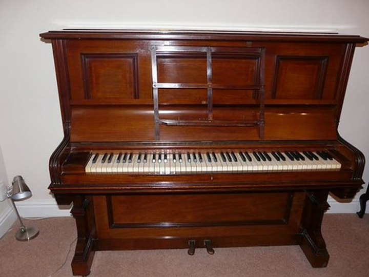
USDCraftLoading 3D
Geometrically Grounded Programmatic Modeling
of Articulated 3D Assets for Simulation
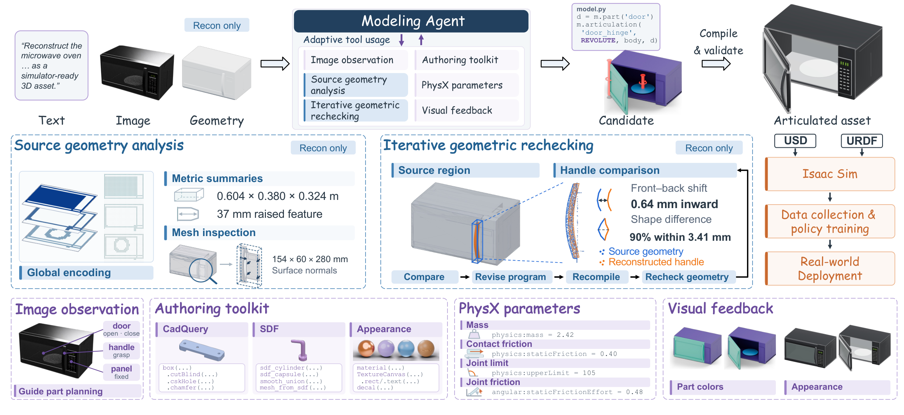
Without any input mesh, USDCraft writes an asset program from a prompt or a reference image. Pretrained LLMs bring broad knowledge of everyday objects, so new categories need no task-specific training. Every result below is the compiled, articulated USD asset — drag to orbit; parts move through their joint limits.

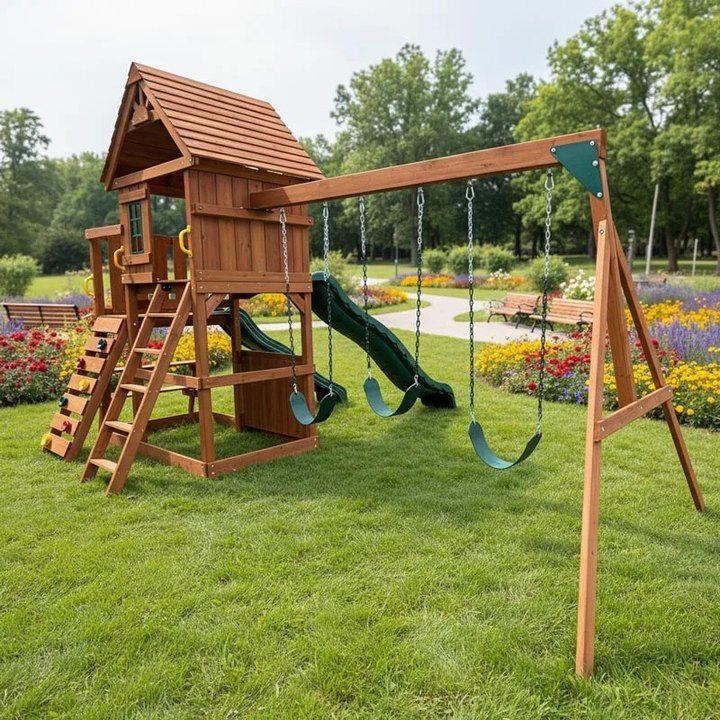
Create a complete, functionally usable, simulator-ready manual wheelchair with two rotating drive wheels, swiveling front casters, fold-up footrests, push rims, brakes, seat, backrest, and armrests.
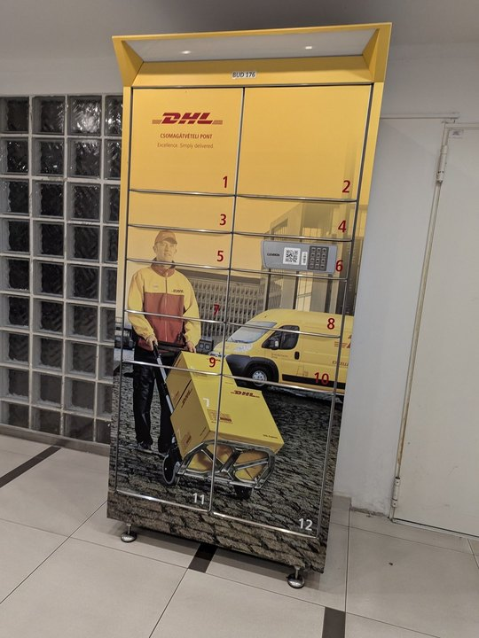
Create a complete, functionally usable, simulator-ready parcel locker bank with eight differently sized independently hinged doors, handles or electronic latches, kiosk screen, stable enclosure, and clear retrieval access.
Create a complete, functionally articulated, simulator-ready deployable satellite high-gain antenna assembly with a spacecraft mounting pedestal, two-axis azimuth-and-elevation gimbal, a parabolic reflector divided into a rigid center dish and two foldable side petals, locking hinge housings, central feed horn, support struts, cable-routing brackets, hard stops, and launch-restraint latches. The antenna must fold into a compact stowed configuration and deploy into a coherent dish shape, while the deployed reflector can aim through both gimbal axes without colliding with the pedestal.
Create a complete, functionally usable, simulator-ready manual pallet jack with pivoting steering handle, rotating steer and load wheels, lifting fork mechanism, control lever, and clear pallet entry.
16 categories · pick an asset, scrub its joints, download the USDZ
For real-to-sim, USDCraft rebuilds each source mesh as a program, separating fused parts and completing missing ones. The input can be a static asset, a raw phone scan, or a single image lifted to a mesh.
Views are linked — orbit either side to compare the source with the rebuilt, articulated asset.
Views are linked — orbit either side to compare the source with the rebuilt, articulated asset.
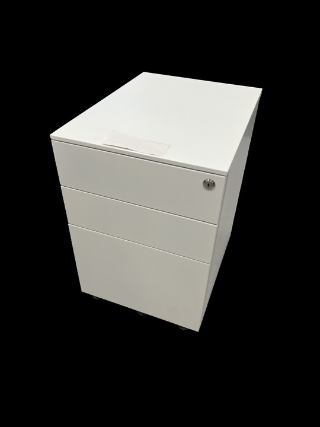
Views are linked — orbit either side to compare the source with the rebuilt, articulated asset.
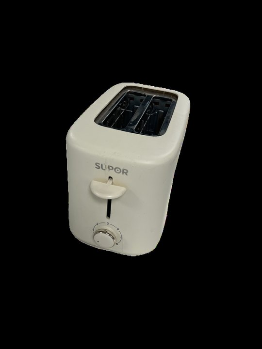
Views are linked — orbit either side to compare the source with the rebuilt, articulated asset.
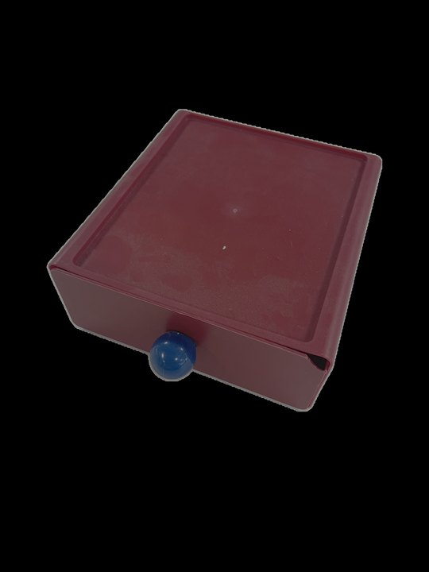
Views are linked — orbit either side to compare the source with the rebuilt, articulated asset.
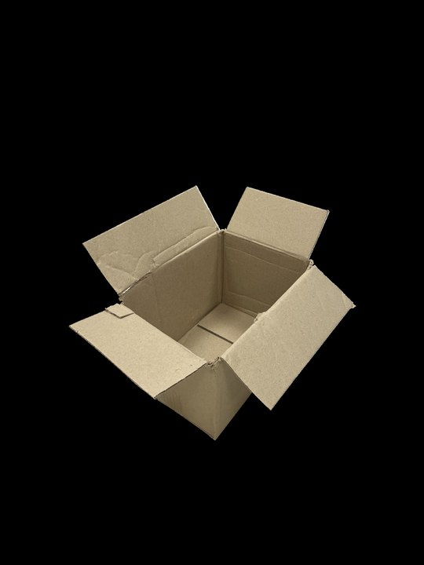
Views are linked — orbit either side to compare the source with the rebuilt, articulated asset.
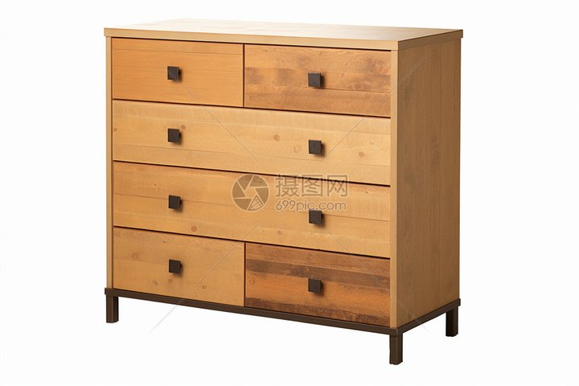
Views are linked — orbit either side to compare the source with the rebuilt, articulated asset.
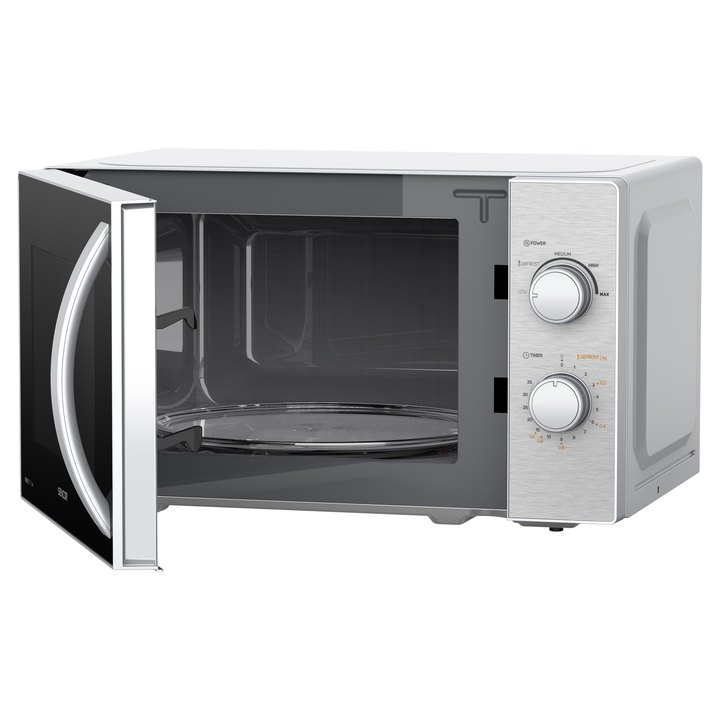
Views are linked — orbit either side to compare the source with the rebuilt, articulated asset.
Same Hunyuan3D 2.1 input for every method · paper results (USDCraft and Mini Workflow: round 1)
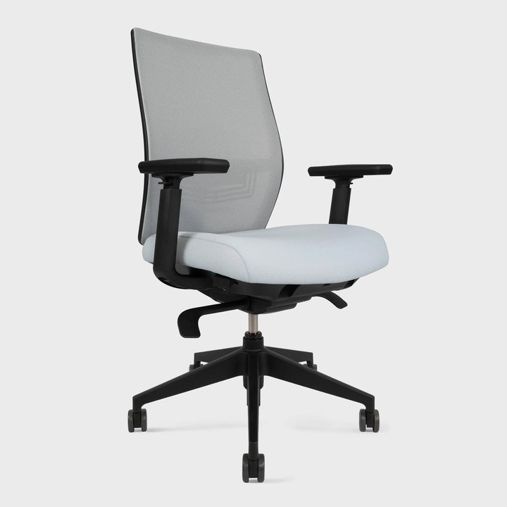
Input · image + Hunyuan3D 2.1 mesh
ArtLLM
SIMART3 parts · 2 joints
Particulate9 parts · 8 joints
Mini Workflow–Astra12 parts · 11 joints
USDCraft–Astra15 parts · 14 joints
Input · image + Hunyuan3D 2.1 mesh
ArtLLM2 parts · 1 joints
SIMART2 parts · 1 joints
Particulate2 parts · 1 joints
Mini Workflow–Astra2 parts · 1 joints
USDCraft–Astra9 parts · 8 joints
All six views share one camera — part colors show how each method splits the object into rigid parts; joints sweep through their limits.
Every compiled asset carries collision geometry, masses and joint limits, so it runs in Isaac Sim (PhysX) without manual fixes. Each clip shows the static asset, its dynamic articulation, and its collision geometry.
We scan three real objects, rebuild them with USDCraft, collect 200 demonstrations per task in simulation, and train a Diffusion Policy that is deployed on the physical robot with no real-world data.
Paper Table · 20 trials per setting · ↓ sim-to-real drop · I/M: image/mesh input
| Asset method | Input | Open drawer | Press toaster lever | Turn on toaster | |||
|---|---|---|---|---|---|---|---|
| Sim | Real | Sim | Real | Sim | Real | ||
| Articraft–Sol | I | 90% | 20%↓70 | 90% | 10%↓80 | 80% | 20%↓60 |
| Particulate | M | 0% | 0% | 50% | 10%↓40 | 0% | 0% |
| Mini Workflow–Astra | I+M | 100% | 0%↓100 | 90% | 60%↓30 | 85% | 70%↓15 |
| USDCraft–Astra | I+M | 100% | 90%↓10 | 90% | 85%↓5 | 85% | 85%↓0 |

.jpg){kind=link}